Photo stories 4
Hiroshima and Shimane — the best and least well known place in Japan
After my mixed experience in Kyoto, I was curious how the next part of my holiday would work out: Spending a week travelling around Hiroshima (one of the best known places in Japan) and Shimane (ranked bottom in tourist popularity last year) with my girlfriend Jackie.
We started by visiting Miyajima, a small island near Hiroshima which contains a famous shrine, various Buddhist temples and a lot of semi-wild deer.
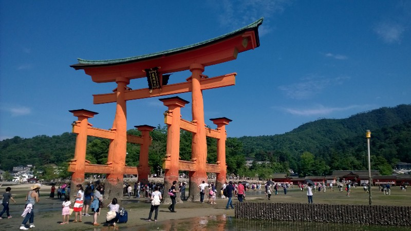This massive torii (red gate, remember?) is the most famous place on the island
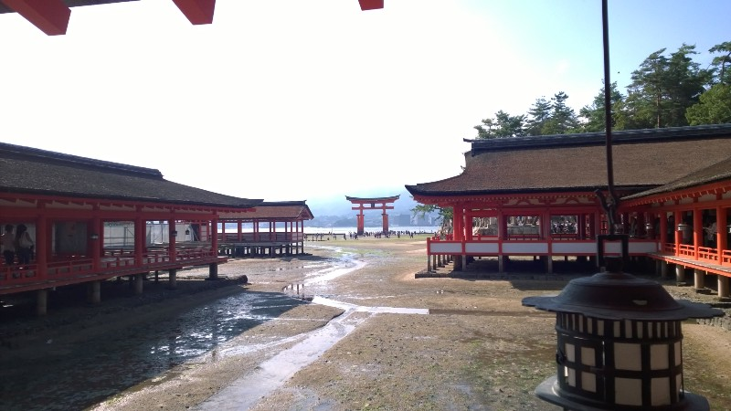When the tide is in, it covers all the ground you can see in this picture, making the shrine appear to be an island with the torii further out to sea
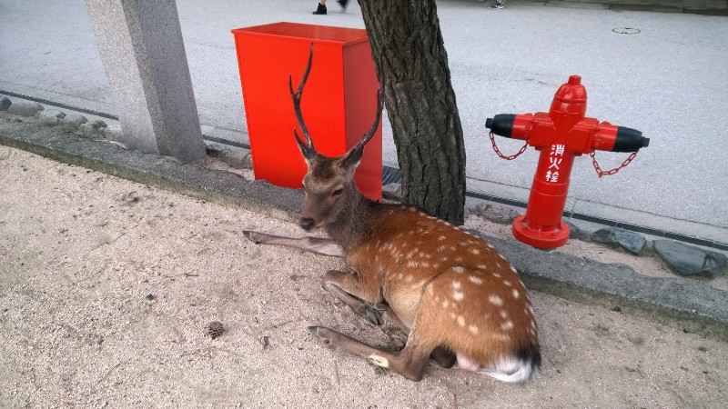The island’s deer are totally comfortable around people, so much so that they will literally steal food out of your hands! Quite a shock when that first happened …
Getting to Miyajima from Tokyo took most of the day, so we stayed the night on the island, planning to do more exploring the next day. The island is mostly mountainous and uninhabited, so despite the uninspiring weather it was nice to walk in real bush again.
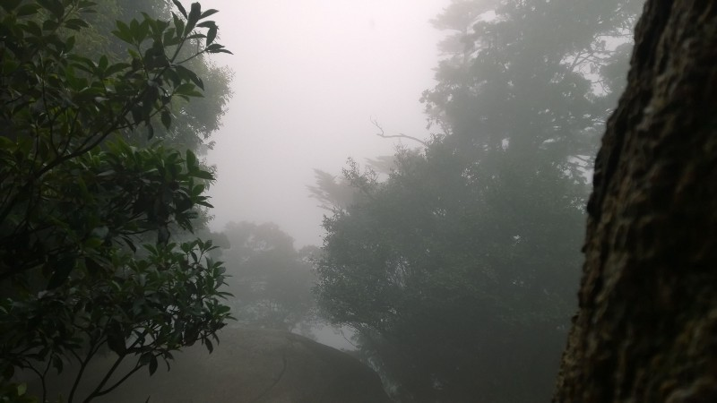There’s supposed to be an amazing view of Hiroshima through here …
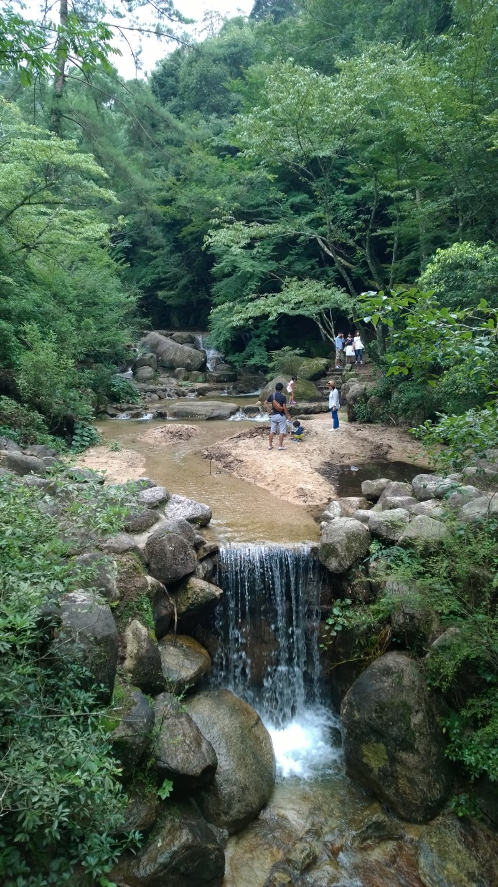Not so different to New Zealand forest
There are various temples on top of the mountain, but apparently I don’t have photos of those. We also tried oysters in batter (a local delicacy) and momiji-manjuu (snacks filled with flavoured cream, which can be eaten raw, baked or deep-fried).
Feeling we’d seen all that Miyajima had to offer, we headed back to the city for a sobering tour of the Peace Museum. It’s a lot more graphic and shocking than I expected, and made the nuclear disarmament stuff which a friend has been writing about over at Politics Personified seem a lot more real and a lot more important. We then had a spooky night walk through the Peace Park to look at the Atomic Bomb Dome.
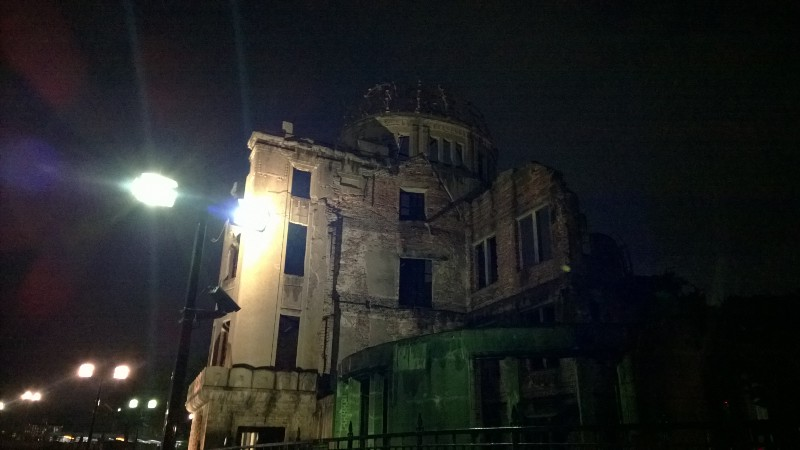In daylight the building looks a bit incongruous in the middle of a modern city, but it feels very different at night after going through the Peace Museum
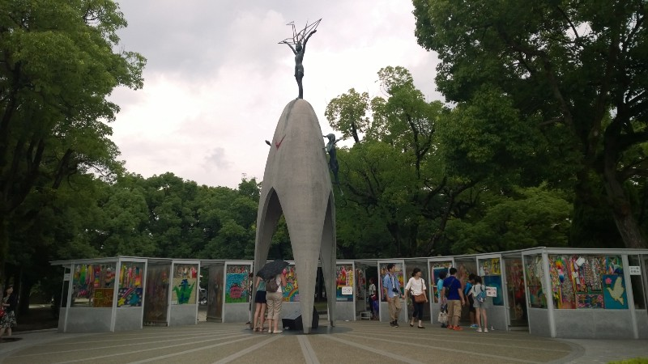We visited the statue of Sadako the next day, marvelling at how many organisations have donated paper cranes to put in the display cases around it
I was surprised to find that Hiroshima still has a military base and training camp when we visited the adjoining museum. In a total contrast to the Peace Museum, it had all the standard things my inner child can’t help but love— model boats, bits of torpedo, cool science stuff and more. That’s not to say that it ignores the Pacific War, but it seems to give a rather different perspective on it.
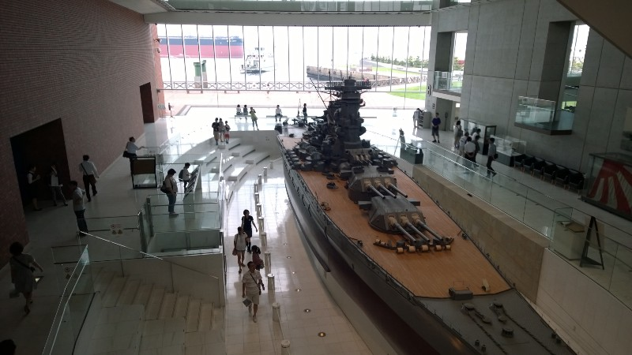Apparently big model ships with lots of guns are just as popular as peace memorials …
So that was Hiroshima — city of peace and war. The next day we moved on to Shimane, a place I’d never heard of until Jackie recommended it. The main attraction is yet another shrine, apparently one of the oldest and largest in Japan, called Izumo-taisha.
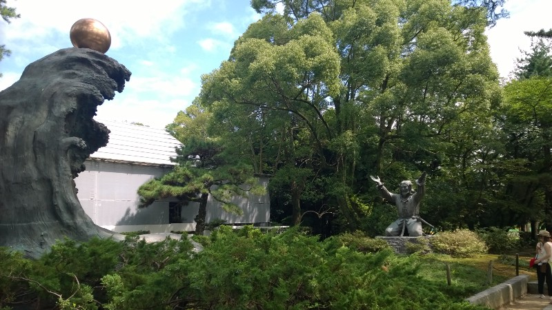More symbolism I don’t recognise. Is that the sun on top of a wave perhaps?
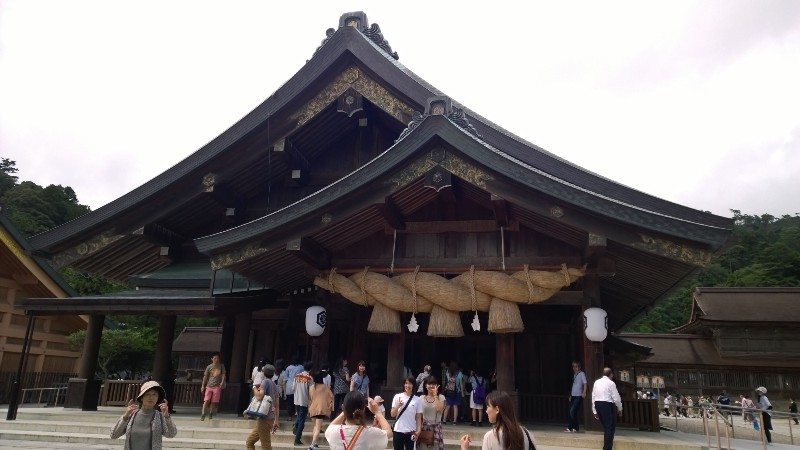The dark wooden construction is an interesting contrast to the bright red shrines in Kyoto
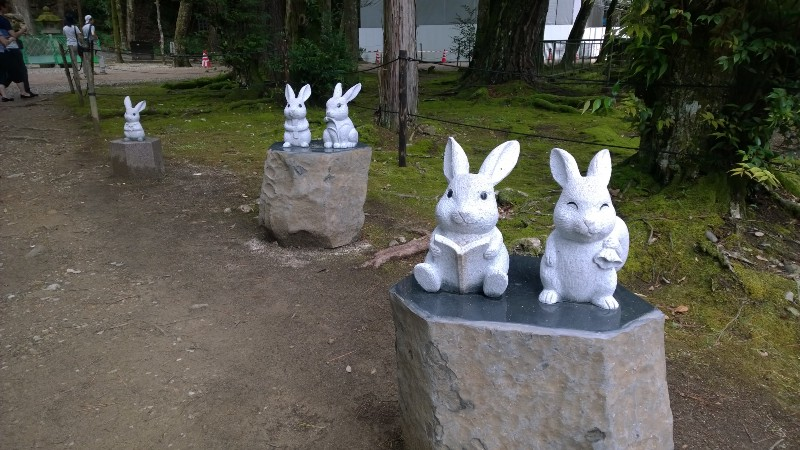There are various rabbit statues dotted around the shrine — these were particularly cute ones!
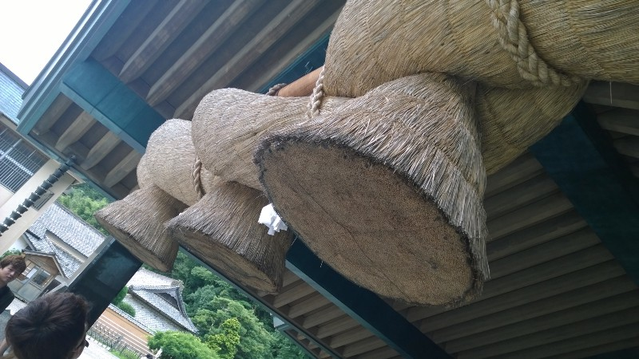This massive symbolic knot shows that the shrine is dedicated to the Shinto god of marriage
Next, we moved on to the capital of Shimane prefecture, a city called Matsue. There isn’t a huge amount to do in Matsue, but that turned out to be a good thing since we both wanted some rest and relaxation by this stage! However, we found time to wander (well … time for Jackie to wander and me to be led) around various tourist attractions and historic sites.
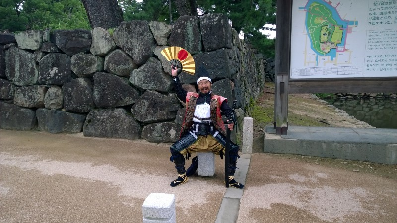This fearsome warrior welcomed us to Matsue castle — unfortunately I couldn’t understand much of his samurai Japanese …
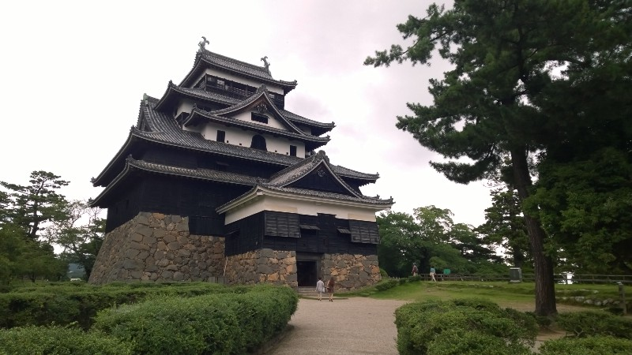The castle itself. Surprisingly, it’s the first castle I’ve been to since getting here that has the distinctive stepped shape I always associate with Japan
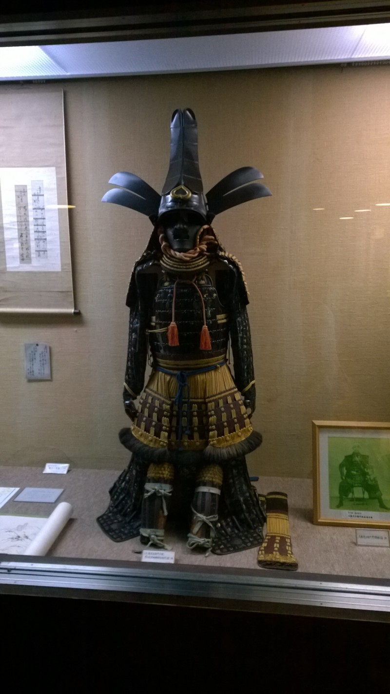All sorts of amazing suits of armour (and other historical artifacts) are displayed inside
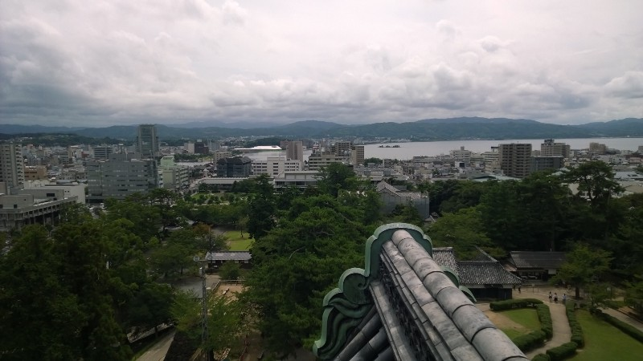The view out over Matsue — small by Japanese standards but still quite big compared to most New Zealand cities!
We also visited the house of a famous author, who wrote (apparently) superb horror stories in Japanese despite being Greek by birth. His name, for those interested, was Lafcardio Hearn, although he’s better known by the Japanese name he assumed: Koizumi Yakumo. Unfortunately I didn’t take any photos there …
Finally, on the day of our return to Tokyo, we traveled to a small town that’s one claim to fame is that it’s home to a famous manga artist. Jackie is a big fan of the man’s most famous series (GeGeGe no Kitaro), which centers around a supernatural boy who fights to protect humans from traditional Japanese monsters. Seeing the vast array of creatures placed around the town (and hearing the theme music over and over and over again through speakers placed all along the high street) did make me want to read it as well, although I suspect I’d be more interested in learning about the monsters than in the actual plot.
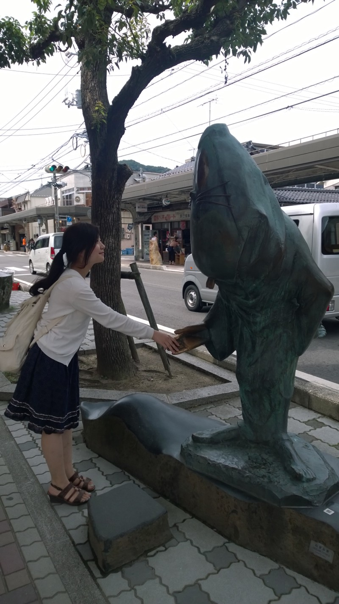“Rat-man” — a friend of the protagonist and Jackie’s favourite character
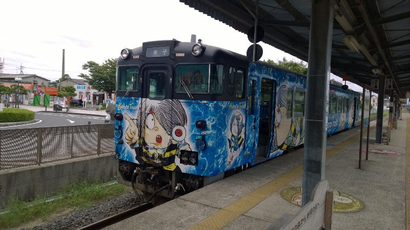Even the trains going to the town are themed with different characters from the series!
Finally, instead of weird things, this time I’ll give you the obligatory couple shot of us (taken at a craft gallery in Matsue).
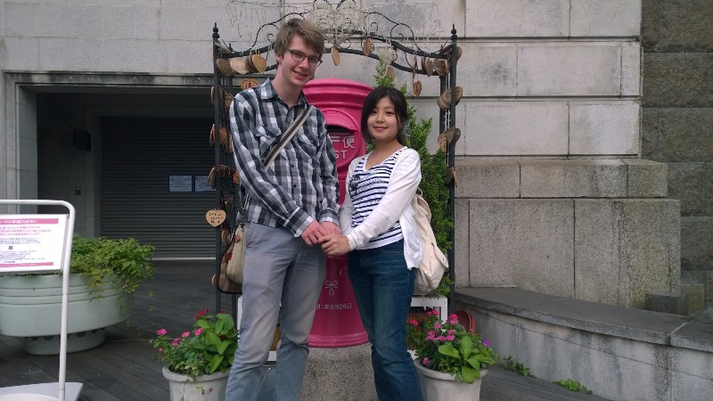
That’s most of the holiday stuff done. I’ll probably do another compilation to try and get up to the present day (three weeks into term) but by then I guess a whole lot more things will have happened … Anyway, thanks for reading!